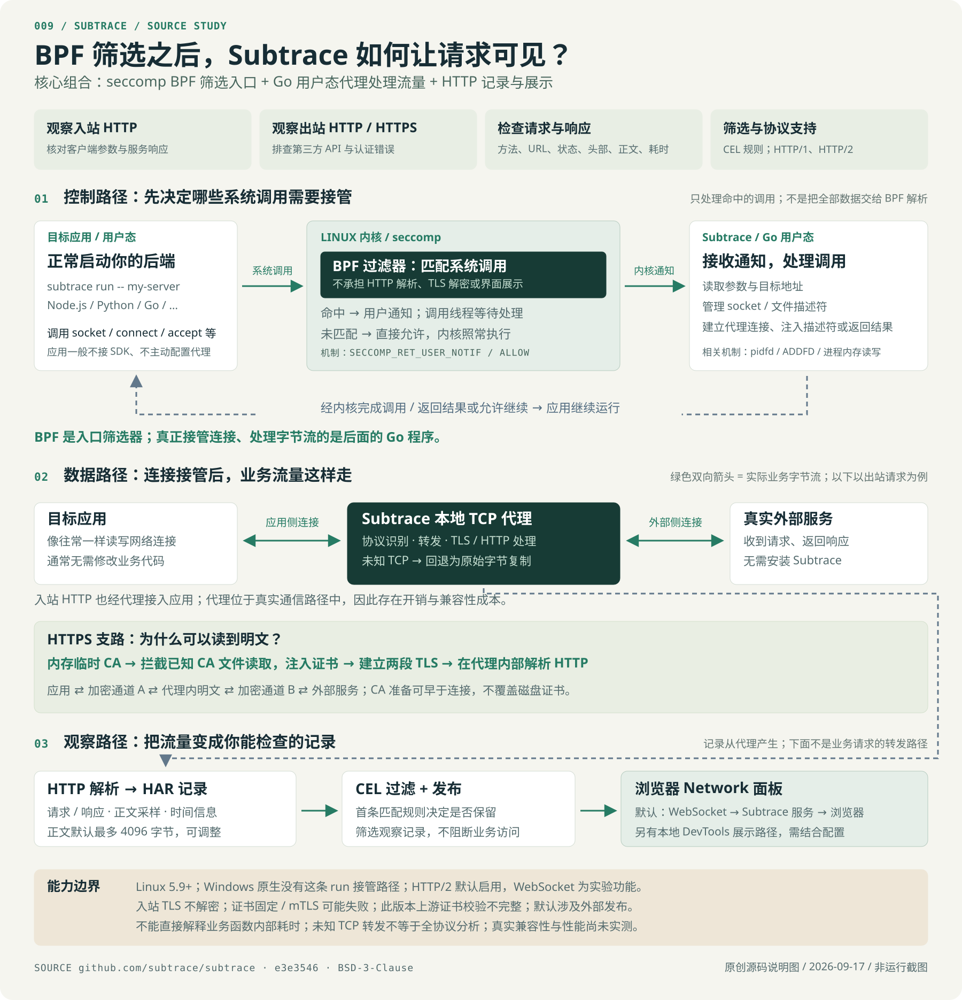

谁发来了什么？
查看入站 HTTP 的方法、路径、请求头与正文，核对客户端参数和服务响应。
入站 HTTP教学示意，不表示真实连接或运行状态。
把后端的 HTTP 交互变得可检查。
适合联调与排障，观察范围止于网络层。
我们的理解：借助 Linux seccomp BPF 筛选系统调用，再由 Go 代理接管连接并处理流量，形成后端 HTTP 调试与观测能力。BPF 是入口机制；请求解析、TLS 处理与展示由后续程序完成。
查看入站 HTTP 的方法、路径、请求头与正文，核对客户端参数和服务响应。
入站 HTTP检查第三方 API 的认证信息、请求内容与返回值。出站 HTTPS 需 TLS 信任机制兼容。
出站 HTTP / HTTPS根据状态、耗时与内容定位异常，用规则排除健康检查，集中查看需要关注的请求。
记录 / 过滤 / 展示HTTP/1 + HTTP/2HTTP/2 默认启用
4,096 bytes默认正文捕获上限，可调整
WebSocket实验功能，默认关闭
无需语言 SDK在系统调用层接入
seccomp BPF 筛选 socket、connect、accept 等调用，通过用户通知交给 Subtrace 处理。未命中的调用直接放行。
seccomp.go ↗管理、注入文件描述符，将应用连接与真实外部连接配对。程序通常无需配置 HTTP 代理或修改业务代码。
socket.go ↗识别 HTTP/1、HTTP/2、TLS。出站 HTTPS 通过临时 CA 与两段 TLS 获取明文；未知 TCP 回退为字节转发。
proxy.go ↗整理为 HAR，采样正文，按 CEL 规则筛选后发布。默认向 Subtrace 服务发送事件，另有本地 DevTools 路径。
parser.go ↗Subtrace 在内存生成临时 CA，并在应用读取已知证书集合时，提供含这个 CA 的内存文件。它与应用、外部服务分别建立 TLS 通道，在代理内部解析明文。它没有破解 TLS，而是在两端之间建立两段加密通信。
不覆盖磁盘系统证书。CA 准备与文件读取可能早于网络连接；证书固定、自定义信任库、mTLS 可能不兼容。
临时 CA 与握手源码 ↗
换一种连接，观察处理方式为什么不同。步骤是源码机制的概念拆解，不代表真实执行时序或耗时。
五种场景的最终区别：明文 HTTP 可解析；出站 HTTPS 在信任兼容时可解析；入站 TLS 与未知 TCP 原样转发；证书固定可能导致 TLS 握手失败。
选择一条固定样例，查看头部和正文。试试筛选错误、排除健康检查，或缩小正文捕获上限。
没有匹配的样例。
调整筛选后，选择一条请求查看详情。
样例：GET /v1/profile → 401。响应为“凭据缺失”，可从状态、头部与正文判断接口认证失败；它不会告诉你是哪段业务函数漏传了凭据。
透明接管依赖 Linux 5.9+ 的 seccomp、pidfd 等接口，支持 amd64 / arm64。此版本未提供 Windows 原生等价 run 路径。
不安装 Subtrace，也不配置容器。WSL2 或 Linux 容器若用于未来实测，仍需验证内核、权限与网络行为。
运行条件源码 ↗入站 TLS 直接转发；固定证书、自定义信任库、mTLS 可能握手失败。该提交上游 TLS 使用 InsecureSkipVerify，信任语义并非完全保持。
连接处理、解析、复制与 TLS 签发均有成本。没有本地性能实测，不能承诺固定延迟或吞吐。
默认事件发送至 Subtrace 服务。另有本地 DevTools 路径，不能仅凭选项就断言进程完全无外联。
不提供业务函数调用栈；未知 TCP 转发不等于理解数据库协议；不能推断支持 UDP / QUIC / HTTP/3。